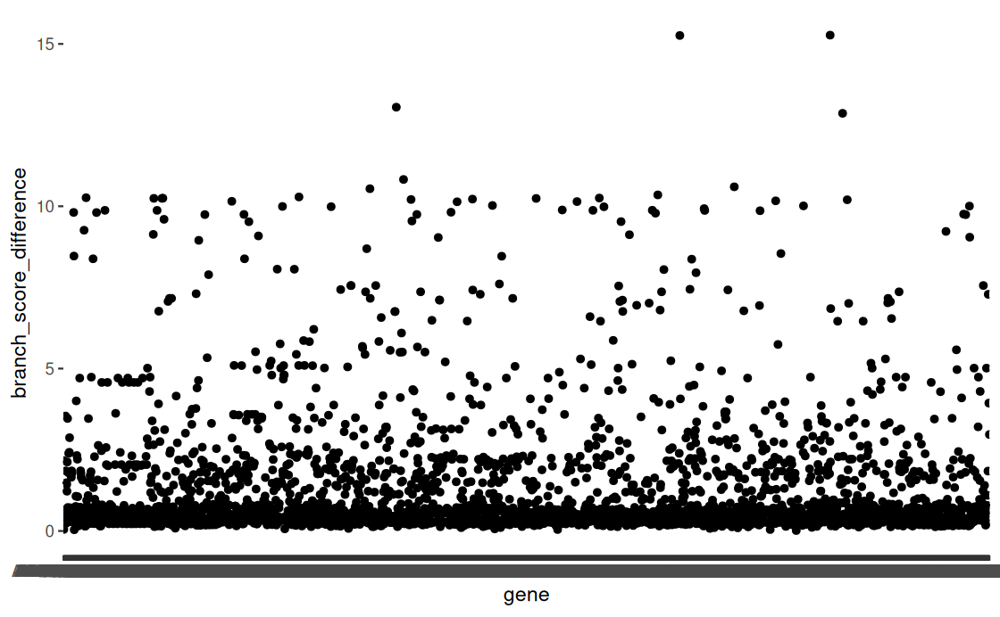

Goals
As a recap – august/sept goals were:
✅ Get consensus tree
✅ Make gene trees so I can run robinson foulds and identify genes of interest
I was able to get my consensus trees and decide which one I’m going to use! I settled on the 50% coverage tree (meaning at least 50% of taxa are represented in each bait sequence) using the v1 bait file (10k mollusc UCEs). There was still some discordance among the trees, but the 50v1 tree had 1) the highest number of sequences used in tree generation and 2) had relationships most supported by literature. I also ended up with a gene tree file for each gene, so this month will be about comparing the two and starting interpretation. Thus, my goals are
✅(10/18) Run Phangorn to generate tree distance (gene trees vs. consensus trees)
✅(10/18) Plot tree distance matrix and 🔲 identify cuttoff/threshold for genes of interest
🔲 Have list of genes of interest that I can start interpretation on
🔲 Update methods to-date
Dailies
Oct 1
Mostly just homework & class for pubpol. Lot of reading and had to finish a case study writeup before class.
GRFP workshop in the evening (last synchronous meeting for a bit)
Oct 2
Thursdays are fully 311 lab days. I teach both sections (AM and PM) and there can be 30-60 min ish for prep.
Met with Isaiah (Luke’s undergrad who I’m assisting with SIA work) to go over isotope sample prep
Oct 5
311 lab material prep and publish for the week
Oct 6
notebook update
311 planning meeting
599 reading & homework
lab meeting
599 class
511 reading & homework
Oct 7
Office hours
511 class
599 reading & Homework
555 homework
555 class
Oct 8
311 grading
Meeting with Emma TS to talk about visual abstract guidelines for rphil MS
Checked and renamed tips for consensus tree. Visualized with ggtree (not a fan). Couldn’t get a very ‘pretty’ visualization and tip names kept getting truncated but the tree relationships looked good and the taxa names in the treefile itself were what I needed (matching the gene tree). Started trial tree distance analysis using 1 gene tree to start. Seemed to get it all sorted, now just need to create it as a loop and save the outputs to a dataframe.
599 class
have a group project for 599 where we have to lead a case study so I met with my group after class to work on that
Oct 9
full lab day
Oct 10
short WFH day – just worked on the visual abstract
Oct 13
311 planning meeting – longer than normal (8-11:30), but should be last lengthy lab setup
599 reading + homework
599 class
Oct 14
today I mostly just have class, meetings, an errand to run for 311, and some grading
Oct 15
did case study prep work for 599, class, meeting with group project after class, grading
Oct 16
lab day
Oct 17
Amirah had some questions about a proposal shes working on with shellfish stuff, so read up some stuff for that, started working on my code a little bit
Oct 18
phangorn tree loop and scatter plot ran :D
meeting with luke this week to talk about identifying a meaningful cutoff and then should be able to start some interpretation :D

Oct 20
311 planning meeting, 599 stuff, 511 homework
lab meeting goals from last meeting
✅ rename tips on consensus tree
✅ run tree distance loop
✅ create data frame of gene tree distances
new goals
update tree methods
have my “genes of interest” list I can start interpreting
spend 2 hours addressing proposal draft comments
Oct 21
office hours, 511 class, homework for 599, 555 homework & class, grading after class
Oct 22
grading, meeting with luke to go over tree updates & bypass potential, grading, meeting with marta about the lecture I’m leading next week, 599 lecture, grading
Oct 23
fish 311 lab prep & lab
Oct 24
311 midterm proctor, material prep for labs next week
Oct 26
Amirah and I are leading the 511 discussion this upcoming week so did some reading and prep for that. 599 readings & homework, finished prepping and published the 311 materials for the week
Oct 27
met with amirah to go over discussion points and start working on slides, 311 planning meeting, meeting with marta to review the lecture slides for wednesday, 311 lecture (to assess classroom dynamics, see what material got covered, and adjust my lecture as needed), work on 511 slides, 599 lecture, 511 slides, update notebook so I can send to steven (woah, meta)
planned next few days
10/28 - office hours, prep for 311 wednseday lecture, 511 discussion lead, theoretically have a 2.5 hour break before meeting with steven where I can cram some coding/writing in so I have something to talk about in our meeting. (Luke gave me some direction for prelim tree analyses that would be cool to show ya if I can get it done in time.) I have 555 on tuesday afternoons. after that I’ll try and hang around and grade
10/29 - morning will be me practicing the 311 lecture and then I’ll be giving the lecture at 1130. After that 599 homework and class. Grading after class
10/30 - 311 lab. grading midterms
10/31 - grading midterms & tree methods updates + prelim results
11/2 - 599 rulemaking analyis paper work (rule chosen: ‘revised definition of Waters of the United States’ put out by the EPA) & homework
11/3 - 311 planning meeting, proposal edits (convenient two hour chunk in my schedule to hit that goal), lab meeting, 599 class
11/4 - office hours, 511, grading/rulemaking homwork, 555 class, 599 homework
11/5 – halleluja a wendesday with no meetings, continue on tree analyses, send out committee meeting whenisgood poll, and then 599 class. rulemaking assignment due at midnight so if any leftover work on that, do after class
11/6 - lab. email jen rusenik (to ask about clams) & jose (to get his take on me bypassing)
11/7 - 599 office hours & topic selection for final paper. continue tree analyes and update prelim results as needed
11/10 - 311 planning, course observation for 555, 599 homework & class
Goals for meeting with Steven 10/27
Should be fairly brief. Mainly want to update on what Luke and I talked about with regard to tree analyses and bypassing. Pitch additional ideas.
Here is the notes from my meeting with Luke:
Bypass stuff:
- Look at genetics of different size clams from spat to adults
- Pelagic eggs are the crux
- If we would expect that parents from ‘pre exposed’ regions in the sound would yield more successful offspring, then we would expect selection against the unprimed larvae, resulting in a genetic bottleneck as they grow. Would measure morphometrics and survival AND if genetic diversity is decreasing with size
Could collect spat for 2 locations and do transplants
Loc1 Larvae —> Loc 1 rearing , + Loc 2 rearing
Loc2 Larvae —> Loc 2 rearing, + Loc 1 rearing
- Could also rear in laboratory setting and then out plant spat to low ph, high ph, and mixed locations throughout the sound and compare morphometrics
Things to do
- [ ] Jen rusenik
- [ ] Look at if there are current studies out on the genetics of bivalves in the puget sound
- [ ] Deepen my understanding of mania clam life history & reproduction
Tree Stuff:
- Plot Tree Distance Score vs:
# of taxa for each gene (are low tip #’s influencing score?)
Size of the gene (in bp) (are shorter genes more volatile?)
Male vs female gamete associated genes
- Generate and plot tree distance score for the UCE genes
Give us a little bit of a ‘control’ to compare to since the UCE’s are “neutral”
Note that UCEs are not a random subset of genes and should not be interpreted as random subset
Note that comparing UCEs to a tree generated with the UCEs is circular
- Plot the outlier trees (can even just start with the extreme outliers)
Goals for meeting with Steven 10/14
I’ve been starting to play with the idea of bypassing and going for the full thing. I feel like I’ve really settled into a good groove with all the grad school stuff (okay, except writing) and have really been enjoying working on the phylogeny chapter and TAing. I do want to get my phd eventually, and it seems like it may be a good time to just keep on going since I’m already here and I’m still at a point in my life where I have the freedom from responsibility to be in school & not have to make very much money. But I don’t want to keep going just for the piece of paper at the end (even though that is definitely part of the motivation) – I would want my additional chapters to help forward some of my long term goals in terms of careers: more field work, some surveying experience maybe, some more applied science application maybe. Ideally, something incorporating ecology would be huge and I think would help me walk out as a very well rounded aquatic scientist when i graduate. But I know funding stuff is super funky right now, so I mostly want to discuss if there are even any projects possible in that realm, and what other options may be.